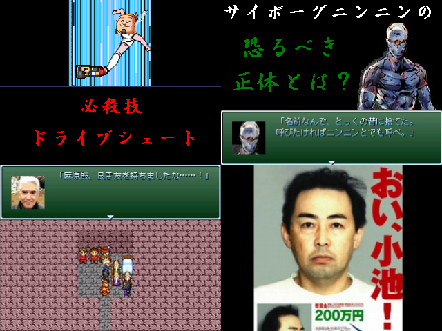

| No,057 【もしも in Real World ～狂気の果てに～】 |
| ダウンロード(1.91MB) 修正ファイル（62.2KB） 2006/12/31 10:20 |
 |
| 【ＨＮ】 ゾマホン 【ジャンル】 反社会ウルトラバイオレンスサイコＲＰＧ 【あらすじ】 怪しげな電波に担がれてテロ組織のリーダーになってしまった宇野康秀！ そして、超攻撃的な性格のサイボーグニンニン、賞金首の小池、 マッドサイエンティストのドクター中松、狂気の大学生マックスを始めとした、 彼の元に続々と集う奇人変人狂人達！ 果たして彼らを待ち受ける未来とは？ ※このゲームはフィクションです(ry 【コメント】 サンタさんからプレゼントを貰えないような悪い子のためのゲームです。 家族の人に見つからないようにこっそりとプレイしてね！ゾマホンとの約束だよ！ |
| 【管理人コメント】 アレな人だらけだなおい 通報しますたｗｗｗｗｗｗｗｗ |